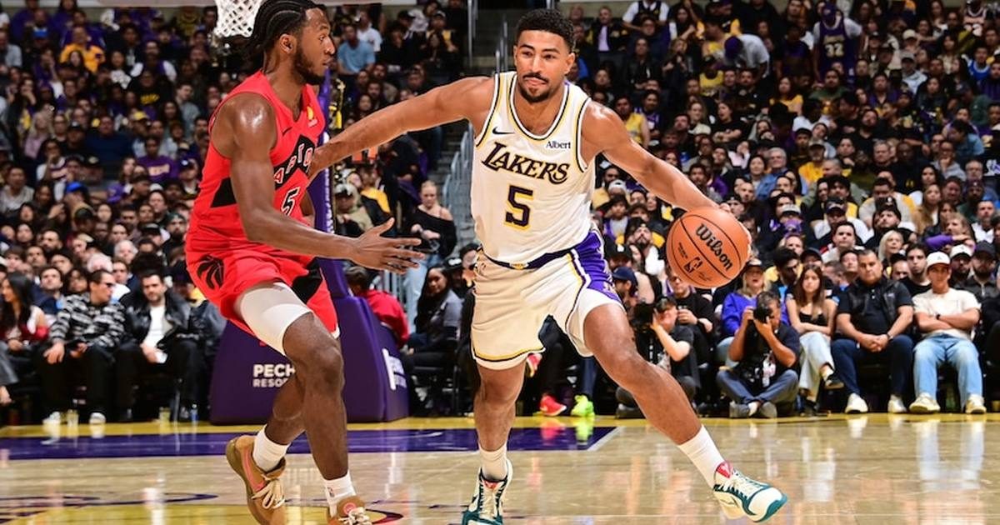

Quentin Grimes drops a career-high 47 — 10 threes, a game-tying bomb with 1.7 left — as the Lakers rally from 18 down to beat the Hornets in OT
Quentin Grimes scored a career-high 47 points, including 21 in the fourth quarter and the game-tying three with 1.7 seconds left, as the short-handed Lakers came back from 18 down to beat Charlotte 118-114 in overtime for their ninth straight win.

Disclosure: this post contains affiliate links. I earn a commission on qualifying purchases.
The night
Quentin Grimes had never scored 40 points in an NBA game. Then the Lakers needed him to save one.
Grimes scored a career-high 47 points — 16-of-24 from the field, 10-of-14 from three — and buried the game-tying three with 1.7 seconds left in regulation as Los Angeles came back from 18 down to beat the Charlotte Hornets 118-114 in overtime at Crypto.com Arena on Tuesday night. It was the Lakers' ninth consecutive win, and they are 13-2 with the best record in the NBA.
The shot itself was disbelief made real. Luka Doncic brought the ball up with under 10 seconds left, the Lakers trailing 111-108, and found Grimes wide open on the right wing. Grimes had already outscored the Hornets 18-17 by himself in the quarter.
"I don't know why they left me open," Grimes said after the game. "I was like, 'Oh yeah, that's cash. I was too open.'"
The 10 threes are a career high, and they put Grimes next to Kobe Bryant as the only Lakers ever to hit 10 or more in a single game. Bryant hit 12 against Seattle in 2003.
The fourth quarter
The Lakers were lifeless for three quarters. They trailed 94-81 entering the fourth, down 18 in the last minute of the third, and were missing their second- and third-leading scorers — Austin Reaves (left heel bruise) and Walker Kessler (right leg soreness) both sat out.
Then Doncic went to the bench for the first six minutes of the final frame, and Grimes took the game over. He scored 21 points in the quarter, including 15 to Charlotte's five over a six-and-a-half-minute stretch that erased a 14-point deficit. When Doncic returned, he kept calling off JJ Redick's plays just to get Grimes the ball.
"Luka, when he got back in the game in the fourth, he kept calling off every play I was calling and just saying, 'No, I'm trying to get Q the ball!'" Redick said. "He recognized what was happening. The hot-hand theory — it's a real thing. It definitely was a real thing tonight."
Doncic finished with 36 points of his own on 13-of-34 shooting, his 11th consecutive game with at least 30. The two combined for 83 points and 15 threes, and the Lakers outscored Charlotte 37-20 across the fourth quarter and overtime, holding the Hornets to three points in the extra session.
Grimes iced it himself in overtime, disrupting an inbounds pass meant for Royce O'Neale with 17.4 seconds left, then making both free throws. Matisse Thybulle added three steals, the last with 8.8 seconds to go.
The context
The win made the Lakers just the fourth team in league history with three different players scoring 40-plus through the first 15 games of a season — Grimes joining Doncic and Reaves. It also kept them unbeaten in November despite playing without two starters, on a night when the supporting cast had to carry real weight: Kevon Looney, Jarred Vanderbilt and two-way player Carson Cooper, playing his first game as a Laker, combined for 19 rebounds with Kessler out.
There was a personal layer to the night, too. Grimes' mother, Tonja Stelly, was in the stands the day after her 60th birthday. He gave her his game-worn uniform afterward and admitted he had tried to get 60 points for her 60th. He came 13 short — and nobody in the building was complaining.
He also did it a week after dislocating the pinkie finger on his shooting hand, an injury that cost him two straight games. Collin Sexton, who scored 10 off the bench, said the locker room has spent weeks telling Grimes to let it fly. Tuesday night, he finally did.
Charlotte, for its part, did almost everything right for three quarters. Brandon Miller scored 28, Naz Reid added 23 points and 11 rebounds, and the Hornets led in every period before the fourth. It is their ninth loss in 10 games.
What it means
Nine straight wins, the league's best record, and now a night where the third option became the hero. The Lakers keep finding a different guy to win the game — and Tuesday it was the one who had never scored 40 before, against a team that left him open with the game on the line.
Up next: the Lakers host the Utah Jazz on Wednesday night at Crypto.com Arena, the second night of a back-to-back.
Gear up: Fanatics